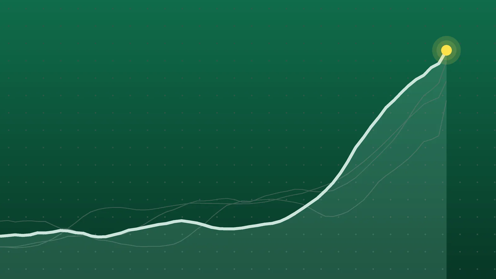

SportsExplainer
Serie A Scores, Oct. 24: Lazio Go Top, Napoli and Roma Draw 3-3
Lazio sit three points clear for one night before Inter play Fiorentina, and Roma’s late comeback in Naples leaves them one point behind second-place Inter.

Quick take
- Lazio beat Parma 2-1 in Rome and moved to 22 points, three ahead of Inter, who host Fiorentina on Sunday.
- Napoli and Roma drew 3-3 in Naples. Scott McTominay and Leonardo Balerdi each scored twice, and Balerdi’s equalizer came in the 89th minute.
- Napoli coach Massimiliano Allegri was sent off for dissent after Roma’s late equalizer.
- Tasos Douvikas scored both goals in Como’s 2-0 win over Sassuolo, and Bologna won 2-0 at Cagliari.
Why it's trending Four Serie A matches on Saturday, Oct. 24, included a six-goal draw between Napoli and Roma and a Lazio win that put Gattuso’s side alone in first place.
Serie A scores for Oct. 24
Lazio finished Saturday alone in first place in Serie A. Kenneth Taylor scored early in the second half and a Parma own goal doubled the lead in a 2-1 win at the Stadio Olimpico, which lifted Gattuso’s team to 22 points, according to Corriere dello Sport.
The wildest game of matchday 8 was in Naples. Napoli led 2-0 and then 3-2, but Roma drew 3-3 on Leonardo Balerdi’s header in the 89th minute, The Associated Press reported. In the two afternoon games, Como beat Sassuolo 2-0 and Bologna won 2-0 in Sardinia.
All final scores
| Winner | Score | Loser | Note |
|---|---|---|---|
| Bologna (away) | 2-0 | Cagliari | Nicolò Casale header, Federico Bernardeschi penalty |
| Como (home) | 2-0 | Sassuolo | Tasos Douvikas scored both, after halftime |
| Napoli (home) and Roma | 3-3 | Draw | McTominay and Balerdi two goals each; Allegri sent off |
| Lazio (home) | 2-1 | Parma | Taylor goal plus a Diego Carlos own goal; Lazio top |
The round opened Friday, when Torino beat Monza 3-2. All four Saturday matches are listed above.
Roma rally twice in Naples
Frank Anguissa put Napoli ahead in the 28th minute with a bicycle kick, and Scott McTominay headed in a Matteo Politano cross in the 48th, per Football Italia. Those were McTominay’s first league goals this season.
Roma then struck twice in five minutes. Matías Soulé scored in the 69th and Balerdi in the 74th to make it 2-2. McTominay restored the lead with a long-range shot in the 83rd, before Balerdi’s header hit the post and crossed the line in the 89th.
Napoli argued that Sam Beukema was fouled in the build-up to that goal, Football Italia reported. Coach Massimiliano Allegri was then sent off for dissent. The goal stood after a VAR check, according to Radio Marte, which also noted that Bryan Cristante hit the post for Roma before halftime.
Lazio hold on against Parma
Lazio and Parma were level 0-0 at the break. Taylor scored in the 50th minute after a pass from Belahyane, and in the 58th Nuno Tavares sent in a cross that Parma’s Diego Carlos turned into his own net, DAZN reported.
Parma did not score until the fifth minute of stoppage time, when Simone Lontani finished a move set up by Fabbian. Corriere dello Sport noted it was the club’s first goal under coach Gilardino. Parma have now lost three in a row. According to DAZN, Lazio have won four straight and are still unbeaten, with seven wins and a draw in eight matches.
Douvikas and Bologna in the early games
Both 3 p.m. matches were scoreless at halftime. At Como, Douvikas then scored twice in the second half for the club’s third league win in a row, Giallorossi.net reported. NewsX pointed out that the win came three days after Como’s Champions League rout of Manchester United, covered in our explainer on Como’s 4-1 win over United.
At Cagliari, Casale headed in a Miranda corner just before the hour. Bernardeschi added a penalty in the 80th minute after Juan Rodríguez handled the ball, according to Calcio Napoli 1926. Cagliari have now lost two straight.
What it means
By Uptick’s count, adding Saturday’s results to the Corriere dello Sport table from before the weekend, the top five look like this:
| Pos | Team | Points | Played |
|---|---|---|---|
| 1 | Lazio | 22 | 8 |
| 2 | Inter | 19 | 7 |
| 3 | Roma | 18 | 8 |
| 4 | Como | 17 | 8 |
| 5 | Milan | 15 | 7 |
The lead is only three points, and Inter have a game in hand. A win over Fiorentina on Sunday would put Inter level with Lazio on 22. Roma are four points off the top and one point behind Inter, with the draw adding a point to their 17. Como are a point behind Roma. Milan could tie Roma on 18 with a win at Udinese.
Further down, the draw left Napoli on 11 points after eight games, 11 behind Lazio. Bologna moved to 8, while Cagliari stayed on 13. Parma still have 4 points from eight matches, and Sassuolo are on 8.
What’s next
Europe sets its clocks back on Sunday, Oct. 25, while U.S. clocks stay on daylight time for another week. That shrinks the gap between Italy and the East Coast to five hours for Sunday’s games. Kickoff times are from Sky Sport Italia, converted to ET:
- Inter vs. Fiorentina, 7:30 a.m.
- Atalanta vs. Frosinone, 10 a.m.
- Genoa vs. Venezia, 10 a.m.
- Lecce vs. Juventus, 1 p.m.
- Udinese vs. Milan, 3:45 p.m.
Juventus, on 11 points from seven games, go to Lecce, and Inter’s early kickoff decides whether Lazio’s stay at the top lasts more than one night.
Sources
- Football Italia Serie A | Napoli 3-3 Roma: Epic battle with McTominay and Balerdi bracesOct. 24, 2026
- Associated Press via myMotherLode.com Roma holds Napoli to dramatic draw and Dortmund beats Frankfurt ahead of Bayern clashOct. 24, 2026
- Radio Marte Napoli-Roma 3-3, che beffa al Maradona: non basta un super McTominay, azzurri rimontati nel finaleOct. 24, 2026
- Corriere dello Sport Lazio inarrestabile, sconfitto anche il Parma: Gattuso primo da solo in attesa dell'InterOct. 24, 2026
- DAZN Highlights Lazio-Parma 2-1: Taylor decisivo, Gattuso primo in solitaria per una notte. Rivedi i gol su DAZNOct. 24, 2026
- Giallorossi.net SERIE A | Douvikas trascina il Como, Bologna corsaro a Cagliari: i risultati delle 15Oct. 24, 2026
- Calcio Napoli 1926 Serie A, il Como vola con Douvikas: Sassuolo ko. Il Bologna passa a CagliariOct. 24, 2026
- NewsX Serie A: Roma Rally to Draw 3-3 at Napoli as Como Continue Winning Run After Humbling Manchester UnitedOct. 24, 2026
- Corriere dello Sport Classifica Serie A 2026-27Oct. 24, 2026
- Sky Sport Italia Serie A, la presentazione dell'8^ giornata: orari, arbitri e squalificatiOct. 22, 2026
Keep reading

Como vs. Manchester United: Como Rout United 4-1 in Champions League
Como beat Manchester United 4-1 in the Champions League on Oct. 21. Goals, key stats, what Carrick and Fernandes said and what it means for United.

Bundesliga Scores, Oct. 24: Late Beier Goal Puts Dortmund on Top
Bundesliga scores for Oct. 24, 2026: Dortmund beat Frankfurt 1-0 to lead the table, Bremen won 3-2 at Mainz and Leipzig routed Elversberg 4-0.

La Liga Scores, Oct. 24: Álvarez Lifts Atlético Past Deportivo
La Liga scores for Oct. 24, 2026: Atlético beat Deportivo 1-0, Villarreal won 2-1 at Valencia, Racing beat Espanyol 2-1 and Elche won 3-0 at Rayo.